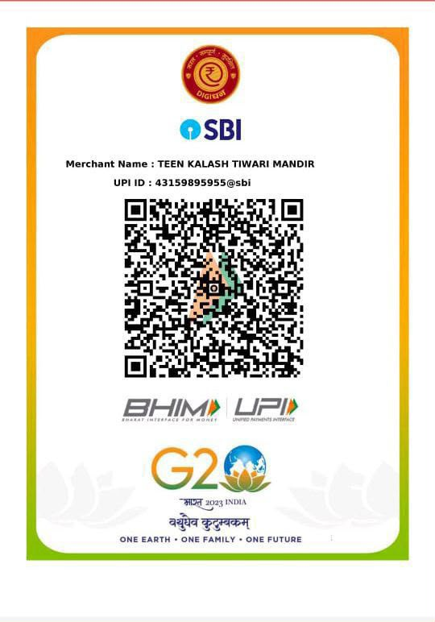

₹1,001
Feed monkeys
One-time chana serving for monkeys. After making your payment, please share the payment screenshot and the initiative name with the temple team. Photos from the initiative will be shared back.
Pay by QR →Choose an offering close to your heart. Every contribution is received with gratitude.
One-time chana serving for monkeys. After making your payment, please share the payment screenshot and the initiative name with the temple team. Photos from the initiative will be shared back.
Pay by QR →Help arrange a nourishing feast for a cow — a simple and meaningful offering of care.
Pay by QR →Support the temple’s daily needs, maintenance and ongoing devotional work with an offering of your choice.
Pay by QR →
Use any UPI app to scan the official QR code and complete your contribution.
We welcome you to Teen Kalash Tiwari Mandir in the heart of the holy city of Ayodhya.
After making a donation, please message the temple contact with your payment screenshot, name and offering details so that the receipt or seva confirmation can be arranged.